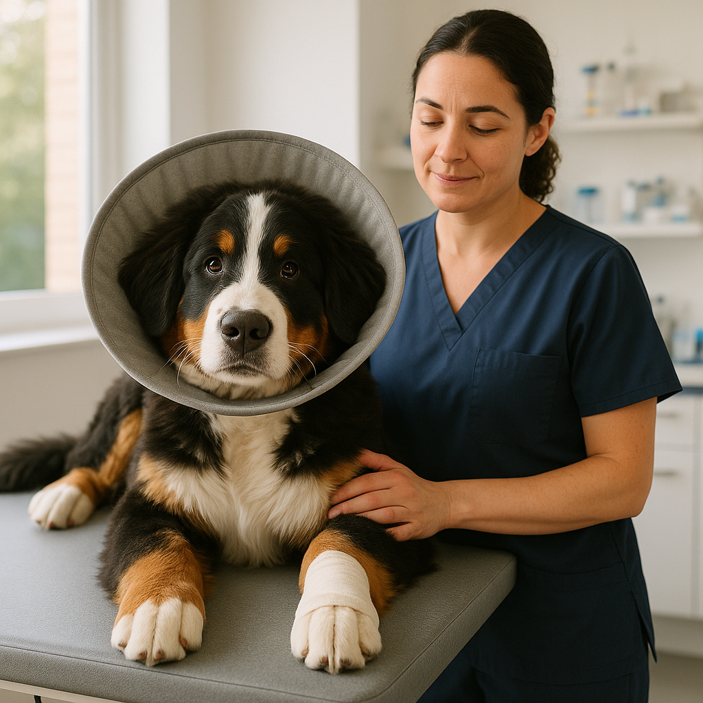
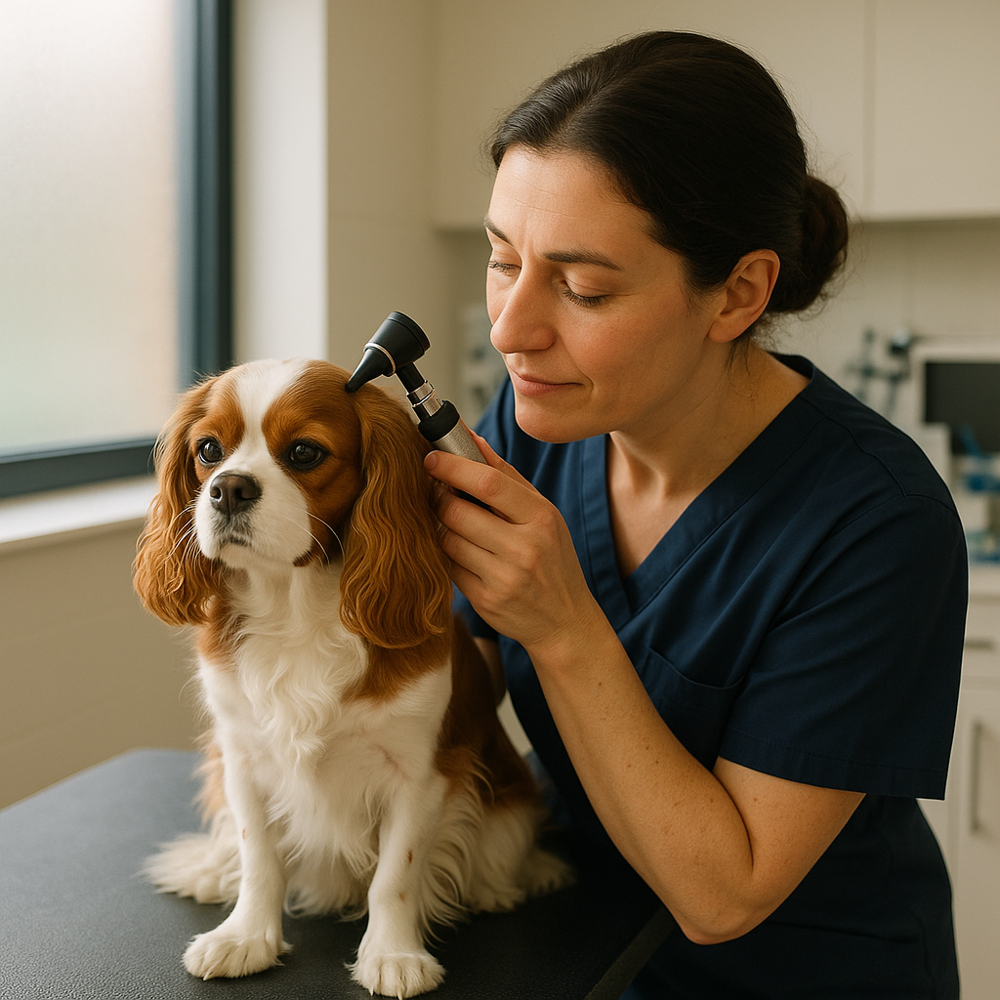

Vet Bills UK — What Should You Expect to Pay?
Contents
Introduction
One of the biggest financial surprises for new pet owners isn't the food or bedding — it's the vet bill. A routine check-up, an unexpected illness, or an emergency can quickly add up to hundreds or thousands of pounds.
But here's the thing: knowing what to expect means you can budget properly, recognise when something is reasonably priced, and most importantly, make informed decisions about your pet's care without worrying about the cost crushing you.
We've compiled real UK vet prices based on recent quotes across the country, from routine vaccinations to complex surgical procedures. Whether you're a new pet owner or considering a different vet clinic, this guide breaks down what you'll actually pay.
Quick Summary
Budget around £500-1,000 per year for a healthy adult dog with pet insurance, or £2,000+ if paying out of pocket for unexpected treatment. Cats are typically cheaper (£200-500 annually with insurance). Emergency and out-of-hours visits can cost 2-3 times more than standard consultations.

Routine Vet Costs
Standard Consultations
The most common vet visit is a routine consultation. Whether your pet needs a health check, vaccinations, or advice on behaviour, expect to pay:
- Standard consultation (daytime, weekday): £30–60 depending on your location and the clinic
- Evening consultation: Often £45–75
- Consultation with treatment/medication: £60–100+ depending on what's needed
London vets tend to be on the higher end, whilst rural areas are often cheaper. Independent vets are sometimes more affordable than large clinic chains.
Annual Vaccinations
Dogs typically need booster vaccinations every 12 months after their initial course. Costs vary:
- Dog booster (1-3 years old): £40–70 per year
- Senior dog booster (7+ years): £50–80 per year
- Cat booster: £30–60 per year
- Rabbit/guinea pig vaccines: £20–50 depending on the vaccine
Many practices offer wellness packages bundling vaccinations, health checks, and microchipping for £100–200 annually, which saves money if you pay upfront.
Microchipping & Collar Tags
Microchipping is mandatory in the UK for dogs. Costs:
- Microchip implant at vet: £15–30
- Microchip registration: Usually free or included
- ID tags (collar): £5–20 from Pets at Home or independent retailers
Common Procedures & Costs
Neutering & Spaying
One of the most common and important procedures. Costs vary significantly by size and location:
- Dog spaying (female): £150–350 depending on size
- Dog castration (male): £100–250
- Cat spaying: £50–150
- Cat castration: £40–120
Larger dogs cost more because they require more anaesthesia and surgical time. Many rescue organisations and charities like Cats Protection offer subsidised neutering (from £20–50) if you meet certain criteria.
Dental Cleaning
Professional dental cleaning requires a general anaesthetic. This is one of the most important preventative procedures:
- Professional dental cleaning (simple): £200–400
- With extractions: £400–800+
- Pre-cleaning blood test: £50–100
Prevention is far cheaper than treatment. Brush your pet's teeth daily if possible — it genuinely can reduce dental bills by thousands over their lifetime.
Cruciate Ligament Surgery (CCLS)
Common in dogs, especially larger breeds. One of the most expensive procedures:
- Lateral suture technique: £1,500–2,500
- TPLO (Tibial Plateau Levelling Osteotomy): £2,500–4,000+
- TTA (Tibial Tuberosity Advancement): £2,500–4,000+
Surgical costs depend on the technique used (your vet will advise based on your dog's weight and condition) and whether it's at a standard clinic or specialist referral centre.
Ultrasound & X-Ray Imaging
- Simple X-ray (1-2 views): £80–150
- Ultrasound scan: £150–300
- CT scan (referral specialist): £500–1,500+
Blood Tests & Diagnostics
- Basic blood panel: £40–80
- Full diagnostic blood work: £100–200
- Allergy testing: £150–400
- Faecal analysis (worm/parasite screen): £20–40
Emergency & Out-of-Hours Vet Care
This is where costs can truly shock you. Emergency vets charge significantly more than daytime clinics because they operate 24/7 with specialist staff on standby.
- Out-of-hours consultation (evening/weekend): £150–250
- Emergency consultation (midnight–6am): £200–350
- Bank holiday emergency visit: £250–400+
- Call-out fee (home visit): £200–400+ on top of consultation
These are just the consultation fees. Treatment, medication, and imaging are additional. A two-hour emergency visit with imaging and medication could easily cost £1,000–2,000.
Common Emergency Costs (Approximate)
- GI blockage diagnosis & surgery: £2,000–4,500
- TPLO surgery for torn cruciate: £2,500–4,000+
- Urinary blockage (cat or dog): £1,500–3,000
- Pyometra surgery (uterine infection, dogs): £1,500–3,000
- Seizure management & hospitalisation: £800–2,500+
This is exactly why pet insurance is so valuable. A single emergency can cost more than insurance premiums for the entire lifetime of your pet.
Complete UK Vet Cost Breakdown Table
| Service | Typical Cost |
|---|---|
| Standard consultation (daytime) | £30–60 |
| Evening consultation | £45–75 |
| Emergency consultation | £150–350 |
| Dog booster vaccination | £40–70 |
| Microchipping | £15–30 |
| Dog spaying/neutering | £100–350 |
| Dental cleaning | £200–400 |
| X-ray (1-2 views) | £80–150 |
| Ultrasound scan | £150–300 |
| Blood tests | £40–200 |
| Cruciate ligament surgery | £1,500–4,000+ |
| GI blockage surgery | £2,000–4,500+ |
Prices are approximate and vary by region, clinic type, and specific circumstances. Always ask for a quote before treatment.
Managing Vet Bills Without Stress
1. Get Pet Insurance Early
This is genuinely the best financial decision for pet ownership. A young, healthy pet might cost £20–40 monthly for comprehensive cover (annual excess). That same pet uninsured could face a £3,000 emergency bill.
Start insurance as soon as you get your pet — pre-existing conditions are not covered if you wait.
2. Ask for Itemised Quotes
Before any procedure, ask your vet for a written breakdown of:
- Consultation fee
- Procedure cost
- Anaesthesia fee
- Pre-operative blood tests
- Medication
- Post-operative check-ups
You can then decide what's essential and what might wait.
3. Preventative Care Saves Money
- Dental brushing: Saves £1,000s in dental procedures
- Regular vaccinations: Prevents expensive illnesses
- Flea & worm treatment: Prevents costly parasitic infections
- Weight management: Prevents obesity-related conditions
4. Consider Specialist Referral for Major Surgery
For procedures like cruciate ligament surgery, a specialist referral centre might actually be similar in cost but offer better outcomes. Always ask if your vet recommends a referral.
5. Payment Plans & Charity Support
Some vets offer payment plans for major surgery. Charities like The PDSA (for low-income pet owners) and Blue Cross offer free or discounted vet care depending on eligibility.
Key Takeaway
UK vet costs are real and significant. Budget £500–1,000 annually for a healthy pet, and understand that emergencies can easily cost £2,000+. Pet insurance isn't a luxury — it's essential protection that typically pays for itself within a single emergency visit. Get insurance early, maintain preventative care (vaccinations, brushing teeth, weight management), and always ask for itemised quotes before treatment. Your pet's health is worth it.